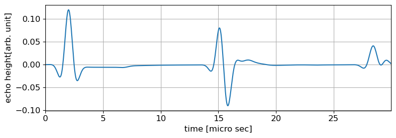

超音波探傷の原理(反射法)
目的
ここでは，反射法による超音波探傷法の原理を学習します．
超音波は物体中を伝播する振動で，概ね20kHz以上の周波数の音波や弾性波が超音波と呼ばれます．
超音波を発生させる方法にはいくつかあります．
最も広く用いられるのは圧電素子を使った方法です．
圧電素子は電圧を加えるとひずみを生じる物質で作れたセンサー素子です．
圧電素子は，厚みや印加する電圧を調整することで振動の周波数を調整することができます．
超音波探傷試験では，このような素子を使って作成された
センサー(超音波探触子:ultrasonic probe)を使って超音波の送受信を行います．
超音波探触子は，電気信号と物理的な振動を変換する役割を果たします．
そのため超音波トランスデューサー(ultrasonic transducer)と呼ばれることがあります．
これを非検査材の表面に接触させて用いれば，対象物の内部に超音波を入射する
ここで，試験体表面に超音波探触子を接触させて，固体内部に超音波を入射することを考えてみます．
下の図は、そのためのシミュレーションモデルを示したものです．
グレーの領域は試験体を，黄色の実線は探触子を設置して超音波を励起する箇所を表します．
ここではセンサー幅は15mmとしています．
超音波探触子はパルサー−レシーバを用いて，送信と受信を時間に応じて切り替えることで，
送信にも受信にも利用できます．
そこで，送信に用いた探触子で，反射波を受信したとします．
このように一つの探触子を使って送信も受信も行う方法を，1探触子法，あるいは
パルス-エコー法と呼びます．
超音波探触子を使った計測では，計測の結果として受信電圧の時刻歴波形が得られます．
そのような時間波形は超音波探傷の分野ではAスコープ波形，あるいはAスキャン波形と
呼ばれます．
下の図は数値シミュレーションで合成したAスコープ波形です。
この波形には27マイクロ秒付近に試験体底面からの反射エコーが現れていることがわかります．
Aスキャン波形は観測点における振動を記録した波形とみなすことができます。
このようなセンサーの設置状況からすれば，底面で反射波が発生し,一定の経過時間の後
送信位置に戻るであろうことは明らかです．
しかしながら、探触子からどのような波が入射され，試験体内部をどのように
伝わり,最終的にもとの位置で受信されるのかは定かではありません。
残念ながら試験体内部の振動を直接実験で観測することはできません。
そのため、物体内部の超音波の伝播状況を詳しく調べるためには、
数値シミュレーションが用いられます.
ここでは,FDTD法(finite-difference time-domain)と呼ばれる方法を使って
数値シミュレーションを行い，その結果をみながら学習を進めます.
数値シミュレーションは，人間の五感では捉えることのできない現象を
視覚的に表示してくれるという点で現象の理解に大変有効です。
ですが、シミュレーションはあくまで仮想現実であるため，過信をすることが
無いようにする必要があります。特に、以下の点には注意するようにしてください。
- 数値シミュレーションは必ず誤差を伴うこと
- 誤差には計算誤差だけでなくモデル化の誤差も含まれる
- 例えば，弾性係数などの物性値も新の値は知りようがなく，通常ばらつきがある
- 原理的にはシミュレーションが可能でも，多くの有用なシミュレーションでは膨大な計算
が必要で，事実上実施困難なシミュレーションも多い
- 数値シミュレーション結果をどのように解釈するかは知識と経験が必要(知りたいことが
直接シミュレーション結果として与えられるとは限らない)
- シミュレーション結果のデータサイズは非常に大きいことが多い．結果のどこに着目すべきか
は必ずしも明らかでない
- 既存のプログラムを使用しても，入力データの作成ミスは非常に起きやすい
下に示した動画をご覧ください．この動画は，試験体内部を超音波が伝わる様子を
示したシミュレーション結果です。カラーバーにあるように，赤が正，青が負の
大きな値を持つ箇所を示したもので，物理的には振動速度を示しています．
このように，物体内部の局所的な振動が，時間経過に伴い次第に物体内部を進展する
のは波動現象の特徴です．ただしこの場合，気体のように物質自体が流れるに移動する
訳ではなく，あくまで試験体の各箇所がその場で振動し，時刻に振動の振れ幅が
大きくあるいは小さくなる様子を想像するようにしてください．
この結果を見ると，約28マイクロ秒の時刻で送信位置に大きな正の振動速度を
持つ反射波が到達し，Aスコープ波形の反射エコーとして現れていることが理解できます。
ここで，大きな振動が試験体を往復する時間を調べてみます。
上に述べたように、反射波のピークは約29マイクロ秒に到達しています。
また、2マイクロ秒付近にある振動波形は，探触子によって直接加振された
結果です。両者のピーク時間差を測ると約27マイクロ秒で，これだけの時間を
かけて超音波は試験体の厚み方向を往復し80mm進んだと分かります．速度に換算すると，
2.96km/sとなり，これを超音波の伝播速度と考えることが出来ます。
実際には超音波の伝播速度は試験体の質量密度と弾性係数から決まる物性値で，
このシミュレーションでは3.0km/sと与えています．
この速度は、試験体の各点が振動する振動の速度とは別であることに注意が必要です。
超音波探傷試験の目的は，物体内部のきずを検出することです．
そこで，試験体内部に空洞がある場合の超音波の挙動を次に調べてみます．

波動場の動画2